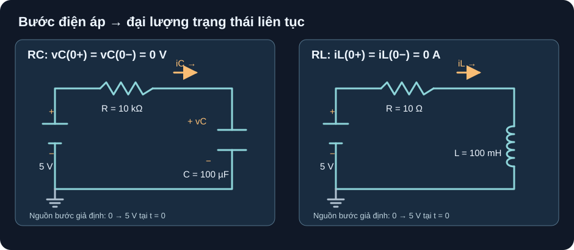

Phân Tích Mạch RC/RL Quá Độ
Trước khi tính thời hằng, hãy xác định đại lượng nào không thể nhảy tại thời điểm chuyển mạch.
- Vẽ vòng dòng và dấu áp, ghi
vC(0−), vC(0+)hoặciL(0−), iL(0+)trước khi thế công thức. - Tìm giá trị cuối và thời hằng của RC/RL bậc một, tính các mốc 10%, 63,2%, 90% và 5τ.
- Tạo bảng số có đầu vào và kết quả đối chiếu được; phân biệt kết quả mô hình với mô phỏng hoặc đo thật.
- Giải thích vì sao ESR/DCR, tải, điện dung theo bias và trở nguồn có thể đổi đáp ứng.

t=0; trước đó tụ không tích điện và cuộn cảm không có dòng. Dấu +vC− đọc từ bản trên xuống GND.Đọc mô tả A13-1
Mạch trái: đi từ cực dương nguồn 5 V qua R 10 kΩ sang cực dương C 100 µF, qua tụ xuống GND rồi về cực âm nguồn. Mạch phải: cực dương nguồn 5 V qua R 10 Ω, qua L 100 mH, theo dây GND về cực âm nguồn. Dòng tham chiếu từ trái qua phải ở nhánh trên. Hai mạch không nối với nhau; đường nét liền nối mọi đầu phần tử, không có đầu dây hở.
1. Chốt điều kiện đầu rồi mới chọn công thức
Với tụ lý tưởng hữu hạn C, iC=C·dvC/dt. Nếu không có xung dòng có diện tích hữu hạn trong thời gian bằng không, áp tụ không nhảy: vC(0+)=vC(0−). Với cuộn cảm lý tưởng hữu hạn L, vL=L·diL/dt; nếu không đặt xung áp lý tưởng, dòng cuộn cảm không nhảy: iL(0+)=iL(0−). Đây là điều kiện mô hình, không phải khẳng định mọi dạng chuyển mạch thực đều hoàn toàn trơn. OpenStax §10.5, phương trình 10.8–10.10; §14.4, phương trình 14.24–14.27.
| Vòng | Đại lượng liên tục | Giá trị cuối khi DC ổn định | Thời hằng |
|---|---|---|---|
| RC nối tiếp, đo áp trên C | vC(0+)=vC(0−) | vC(∞)=Vs; dòng về 0 | τC=Rth·C; ở hình Rth=R |
| RL nối tiếp, đo dòng qua L | iL(0+)=iL(0−) | iL(∞)=Vs/R nếu DCR=0 | τL=L/Rth; ở hình Rth=R |
Hệ bậc một tuyến tính sau một bước nguồn không đổi có thể viết x(t)=x∞+(x0−x∞)e^(−t/τ). Muốn dùng nó, phải biết x0, x∞ và điện trở nhìn từ phần tử lưu trữ với nguồn độc lập bị triệt đúng cách (nguồn áp lý tưởng thành ngắn mạch; nguồn dòng lý tưởng thành hở mạch). Không thay R bằng một điện trở thuận tiện nếu tải/nguồn làm đổi điện trở nhìn vào. ADI RL activity, phần Background nêu L/Rth theo điện trở Thévenin nhìn từ L.
2. Ví dụ giải độc lập: RC nạp từ 0 V
Hình trái: Vs đổi từ 0 lên 5 V ở t=0; R=10 kΩ, C=100 µF, vC(0−)=0 V; không có tải song song và mọi phần tử là lý tưởng. Theo KVL: Vs−Ri−vC=0, với i=C·dvC/dt. Nghiệm bậc một từ OpenStax §10.5, Eq. 10.8–10.9 và Fig. 10.39 cho:
- Điều kiện:
vC(0+)=0 V; khi đã ổn định,i→0nênvC(∞)=5 V. - Đơn vị:
τC=(10 000 Ω)(100×10⁻⁶ F)=1 s. - Đáp ứng:
vC(t)=5[1−e^(−t/1 s)] V,i(t)=(5/10 000)e^(−t/1 s) A. - Kiểm tại một τ:
vC(1 s)=5(1−e⁻¹)=3,1606 V≈3,16 V;i(1 s)=0,184 mA. Tổng sụt áp R+C lúc này là1,8394+3,1606=5 V.
Mốc 10% là t=−τ ln(0,9)=0,105τ; 63,2% ở t=τ; 90% ở t=−τ ln(0,1)=2,303τ. Ở 5τ, kết quả là 99,326%, không phải đúng 100%. Các phần trăm này nói về quãng từ x0 đến x∞; không phải một mức điện áp cố định khi điều kiện đầu khác 0.
3. Đối chiếu với RL: thời hằng có chiều ngược
Hình phải dùng cùng bước 5 V giả định, R=10 Ω, L=100 mH=0,1 H, iL(0−)=0 A. KVL Vs−RiL−L·diL/dt=0 dẫn tới iL(t)=(Vs/R)[1−e^(−tR/L)], đúng dạng series RL trong OpenStax §14.4 và ADI, Eq. (1), (3). Ở đây τL=0,1/10=0,01 s=10 ms, iL(∞)=5/10=0,5 A, iL(10 ms)=0,5(1−e⁻¹)≈0,316 A. Ở t=0+ cuộn cảm nhận 5 V; ở trạng thái cuối, điện áp lý tưởng trên L về 0. Khác RC, tăng R làm giảm τL đồng thời làm giảm dòng cuối.
4. Hoạt động tái lập: bảng số, rồi mới mở rộng mô phỏng
Nhập đúng các giả định hình A13-1: RC
Vs=5 V, R=10 000 Ω, C=0,0001 F, vC0=0; RLVs=5 V, R=10 Ω, L=0,1 H, iL0=0. Tạo cộtk=0,1,2,5; với RC đặtt=k·1 s, với RL đặtt=k·10 ms.Tính
F(k)=1−EXP(−k); cột RC là5·F(k)V, cột RL là0,5·F(k)A. Không làm tròn F trước khi nhân. So bảng sau; sai khác quá ±0,01 ở số trình bày báo nhập sai đơn vị hoặc dấu.Đổi điều kiện đầu RC thành
vC0=2 V, giữVs=5 V; dùngvC(t)=5+(2−5)e^(−t/τ). Kết quả kỳ vọng tại0, τlà2,00 V; 3,90 V. Việc này phân biệt “63,2% quãng thay đổi” với “63,2% của 5 V”.Nếu có simulator, chạy transient cho topology và giá trị tương ứng, đặt điều kiện đầu 0, thời gian kết thúc ít nhất
5τ, bước lưu tối đaτ/20; lưu netlist, tên/phiên bản phần mềm, đồ thị và số đọc ở các mốc rồi so bảng. Đây là hướng dẫn kiểm chứng; trang này chưa cung cấp biên bản một lần chạy mô phỏng.
| k=t/τ | F(k) | RC: t, vC | RL: t, iL |
|---|---|---|---|
| 0 | 0 | 0 s; 0 V | 0 ms; 0 A |
| 1 | 0,6321 | 1 s; 3,1606 V | 10 ms; 0,3161 A |
| 2 | 0,8647 | 2 s; 4,3233 V | 20 ms; 0,4323 A |
| 5 | 0,9933 | 5 s; 4,9663 V | 50 ms; 0,4966 A |
Ở ADI RL Transient Response, phần Hardware setup/Procedure có mạch RL thực với 100 Ω và 1 mH, tín hiệu vuông và cách đọc mốc 0,63 trên điện áp điện trở. Đó là mạch tham khảo thực của ADI, khác bộ số 10 Ω/100 mH trong bài. Khi nối thiết bị thật, phải chọn part và giới hạn nguồn, biết DCR/dòng định mức, chu kỳ xung và đường xả năng lượng của cuộn cảm trước khi đưa ra chỉ dẫn cấp điện.
τ=RC và τ=L/R ở hình chỉ đúng với nguồn lý tưởng, một phần tử lưu trữ tuyến tính và điện trở nhìn vào đã nêu. Tụ thật có ESR, rò, dung sai và điện dung MLCC thay đổi theo DC bias; cuộn cảm có DCR, bão hòa và tổn hao. Xung ngắt tải cảm có thể tạo áp lớn, nên không suy ra sơ đồ lắp hoặc khả năng chịu áp part từ hình bài toán. Không có BOM/revision, netlist đã chạy hoặc phép đo của dự án ở trang này.
Mạch series RC lý tưởng, nguồn đổi từ 0 sang 3 V tại t=0, tụ đã xả hết. Tìm vC(0+), τ, vC(20 ms), dòng ban đầu và điện áp tại 5τ. Nếu tụ còn 1 V trước khi đóng nguồn, vC(0+) là bao nhiêu?
- Mô hình và điều kiện đầu, 1 điểm: vòng series, cực áp tụ dương phía nguồn; ban đầu xả hết nên
vC(0−)=vC(0+)=0 V. Nếu ban đầu 1 V thìvC(0+)=1 V, không nhảy lên 3 V. - Công thức và đơn vị, 1 điểm:
τ=(2000 Ω)(10×10⁻⁶ F)=0,020 s=20 ms;vC(t)=3[1−e^(−t/20 ms)] V,i(0+)=3/2000 A. - Kết quả, 1 điểm:
vC(20 ms)=3(1−e⁻¹)=1,896 V≈1,90 V;i(0+)=1,5 mA;vC(5τ)=3(1−e⁻⁵)=2,980 V. KiểmvCtăng nhưng chưa vượt 3 V. - Giới hạn, 1 điểm: giá trị tính là giả định mô hình; khi chọn tụ/nguồn thật cần kiểm ESR, điện dung hữu hiệu, dung sai, mức áp, dòng nạp và tải đo. Không gọi kết quả là đã mô phỏng hay đo.